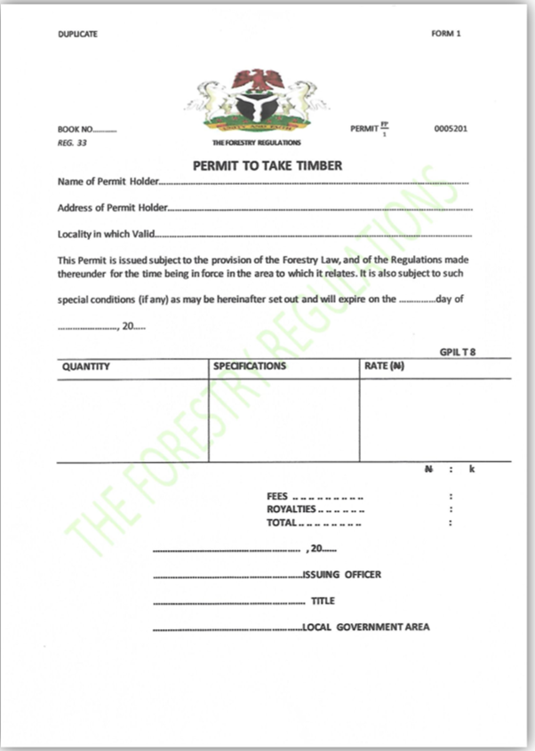
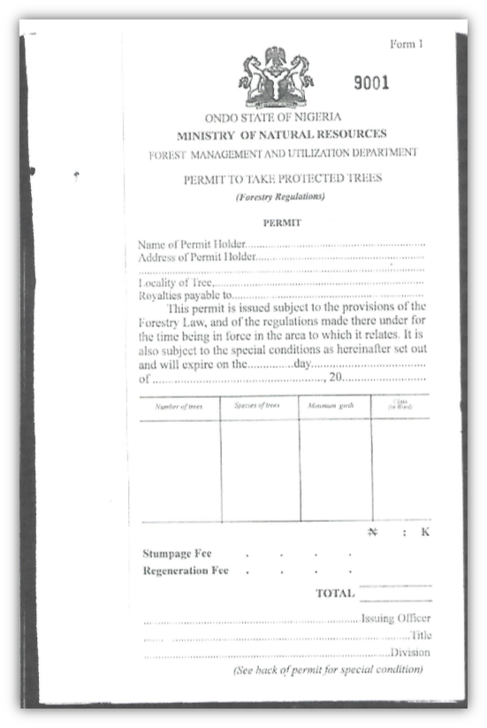
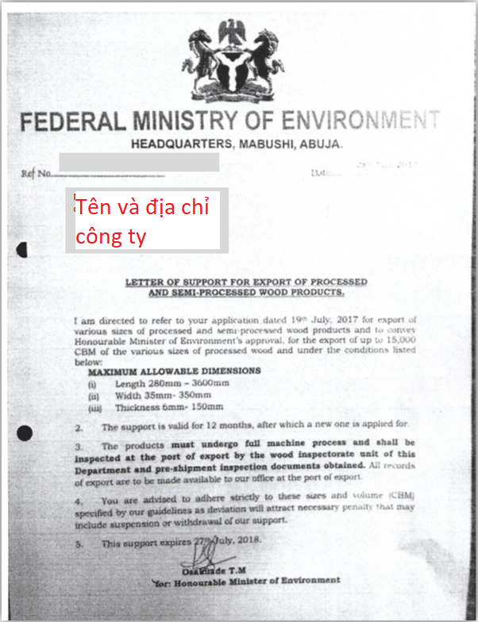
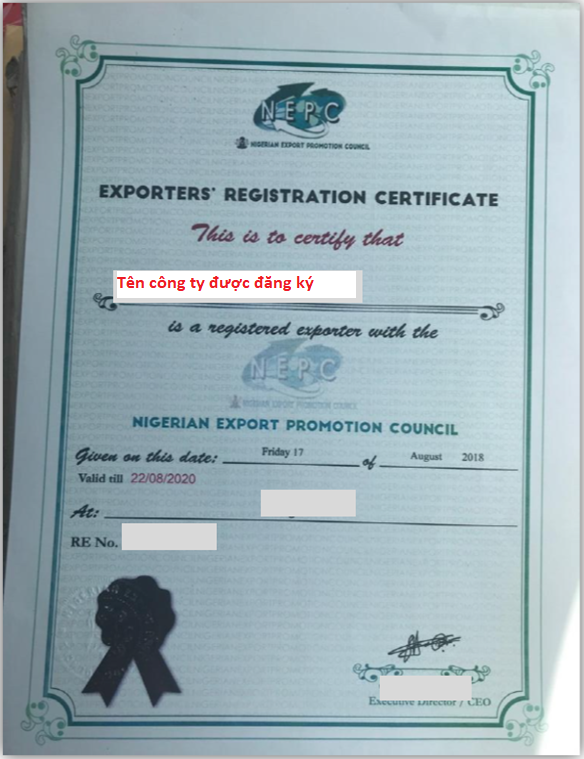

Implementing Timber Leglity Assurance Systems
A guide to comply with timber legality requirements in Cameroon and to support due diligence

NIGERIA
Nigeria’s Timber legality requirements
Nigeria has not yet entered into negotiations for a Voluntary Partnership Agreement with the European Union. The timber legality assurance system has not yet been developed in this country, despite relatively complex legal regulations and many identified risks for timber importers. Compliance with national laws and helping prevent the import of illegal timber into other countries is highly dependent on the Government developing an effective control and verification system, operators complying with legal requirements and conducting due diligence. By being aware of the legal requirements in Nigeria highlighted below, law enforcement agencies and importers can implement control and risk mitigation measures to prevent timber being illegally harvested, transported and traded. Importers and verification agencies may refer to or use this definition in implementing due diligence.
Suggestions for developing and implementing due diligence for importers
Due diligence and complexity

Developing due diligence systems
Implementing due diligence
The following documents are selected in accordance with Nigeria’s legal definition and/or legal requirements in different stages of the supply chain.
Timber harvesting permit
Timber harvesting permit is signed, stamped and issued by the state Forest Service to loggers. Check signature, seal of Director of Forestry Department, term of license, area, type of natural/planted forest, quantity and specification of harvested timber.
Permit to take protected species
permit to take protected species is signed and stamped by an officer of the Department of Forest Use and Management, State Ministry of Natural Resources, and issued to the logger. Check signature, seal, term of license, area, type of natural forest/plantation forest, quantity and specification of harvested timber.
Approval of the Environmental Impact Assessment Report
The environmental impact assessment report is signed and approved by the Director of the Department of Environmental Assessment, the Federal Ministry of Environment, for the forest management organization or the logger. Check that the signature and seal of the Director of the Department of Environmental Assessment and the name of the project owner are consistent with the business registration certificate.
Block Permit
Block permit is issued by the state Forest Service to loggers. Check term of license, cross-check the owner's name on the permit with the harvesting permit, business registration certificate, check the signature and seal of the right authority.
Log Evacuation Schedule
Log Evacuation Schedule is signed and stamped by the staff of the Department of Forest Use and Management, State Department of Natural Resources, and issued to the loggers. Check the signature, seal, term of license, owner, volume, species of timber in accordance with the harvesting permit.
Harvest Permit Payment (Stumpage)
Harvest Permit Payment is issued by the state Forest Service to the logger. Check the period of payment, cross-check the owner's name on the stumpage with the harvesting permit, business registration certificate.
Forest Compartment Allocation fees
Forest Compartment Allocation fees is signed by the Head of State Forest Service, and issued to the logger. Check the term of invoice, cross-check the owner's name with the harvesting permit, business registration certificate, check the signature and seal of the right authority.
Tax Clearance Certificate
Tax Clearance Certificate is signed by the Federal Inland Revenue Service (FIRS), the federal Department of Finance located in the state, and issued to the logger. Check the owner's name with the business registration certificate, tax code, business field and validity of certificate.
Payment receipt for vehicle registration
Invoice for registration of means of transporting timber Payment receipt for vehicle registration is signed by the Head of State Forest Service, issued to the timber transport company and logger. Check the information on the receipt, cross-check the timber owner with the harvesting permit.
Letter of Support for Export
Letter of Support for Export is signed and stamped by the Federal Minister of the Environment, issued to timber operators and processors, timber exporters. Check the validity of date on the letter, cross-check the owner with the harvesting permit, business registration certificate, and wood processing license.
Export registration certificate
The export registration certificate is signed and stamped by the Director of the Export Promotion Council and issued to the exporter of wood products. Check the validity of date on the certificate, cross-check the owner with the business registration certificate.
Pre-shipment certificate
Pre-shipment certificate is signed and stamped by the Director of the Forest Service, Federal Ministry of Environment, issued to the exporter of wood products. Check the validity of date on the certificate, cross-check the owner with the business registration certificate, check the actual wood products with the list.
CITES Permit
CITES permit is issued to loggers by the CITES Management Authority of the Forest Service, Federal Ministry of the Environment. Check the signature and seal, area, the type of forest on the harvesting permit, the quantity and specification of the harvested timber.
Business Registration Certificate (Certificate of Incorporation)
Business registration certificate is signed by the Director General of the General Department of Business Registration (Corporate Affairs Committee-CAC) and issued to enterprises, including loggers and foresters. Check the information on the certificate, signature and seal, cross-check it with the harvesting permit, the type of business product, the duration of the certificate. Information can be found at: http://publicsearch.cac.gov.ng/comsearch/
License to operate sawmill
License to operate sawmill is issued by the State Forest Service, under the Ministry of Agriculture and Rural Development, to the wood processing company and the owner of the sawmill. Check the information on the permit, the signature and seal of the State Chief of Forest Conservation, and the validity of the permit.
Labor contract
The labor contract is drawn up by the company and signed by the employer and the employee. Check that the contract content, information, signature and seal are complete and accurate.
Employer's register
Importers can check the information of exporters, loggers on the Register of Employers about business name, address, business and processing sector.